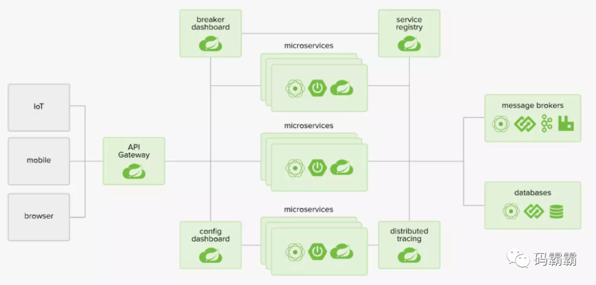

Spring Cloud 基础
什么是 Spring Cloud？
Spring Cloud 是一系列框架的有序集合。它利用 Spring Boot 的开发便利性巧妙地简化了分布式系统基础设施的开发，如 服务发现注册、配置中心、智能路由、消息总线、负载均衡、断路器、数据监控 等，都可以用 Spring Boot 的开发风格做到一键启动和部署。Spring Cloud 并没有重复制造轮子，它只是将各家公司开发的比较成熟、经得起实际考验的服务框架组合起来，通过 Spring Boot 风格进行再封装屏蔽掉了复杂的配置和实现原理，最终给开发者留出了一套简单易懂、易部署和易维护的分布式系统开发工具包。
为什么要使用 Spring Cloud？
不论是商业应用还是用户应用，在业务初期都很简单，我们通常会把它实现为单体结构的应用。但是，随着业务逐渐发展，产品思想会变得越来越复杂，单体结构的应用也会越来越复杂。这就会给应用带来如下的几个问题：
- 代码结构混乱：业务复杂，导致代码量很大，管理会越来越困难。同时，这也会给业务的快速迭代带来巨大挑战。
- 开发效率变低：开发人员同时开发一套代码，很难避免代码冲突。开发过程会伴随着不断解决冲突的过程，这会严重的影响开发效率。
- 排查解决问题成本高：线上业务发现 bug，修复 bug 的过程可能很简单。但是，由于只有一套代码，需要重新编译、打包、上线，成本很高。
由于单体结构的应用随着系统复杂度的增高，会暴露出各种各样的问题。近些年来，微服务架构逐渐取代了单体架构，且这种趋势将会越来越流行。Spring Cloud 是目前最常用的微服务开发框架，已经在企业级开发中大量的应用。
Spring Cloud 的优缺点？
优点
- 产出于 Spring 大家族，Spring 在企业级开发框架中无人能敌，来头很大，可以保证后续的更新、完善。
- 组件丰富，功能齐全。Spring Cloud 为微服务架构提供了非常完整的支持。例如、配置管理、服务发现、断路器、微服务网关等。
- Spring Cloud 社区活跃度很高，教程很丰富，遇到问题很容易找到解决方案。
- 服务拆分粒度更细，耦合度比较低，有利于资源重复利用，有利于提高开发效率。
- 可以更精准的制定优化服务方案，提高系统的可维护性。
- 减轻团队的成本，可以并行开发，不用关注其他人怎么开发，先关注自己的开发。
- 微服务可以是跨平台的，可以用任何一种语言开发。
- 适于互联网时代，产品迭代周期更短。
缺点
- 微服务过多，治理成本高，不利于维护系统。
- 分布式系统开发的成本高（容错，分布式事务等）对团队挑战大。
总的来说优点大过于缺点，目前看来 Spring Cloud 是一套非常完善的分布式框架，目前很多企业开始用微服务、Spring Cloud 的优势是显而易见的。因此对于想研究微服务架构的同学来说，学习 Spring Cloud 是一个不错的选择。
Spring Cloud 发展前景？
Spring Cloud 对于中小型互联网公司来说是一种福音，因为这类公司往往没有实力或者没有足够的资金投入去开发自己的分布式系统基础设施，使用 Spring Cloud 一站式解决方案能在从容应对业务发展的同时大大减少开发成本。同时，随着近几年微服务架构和 Docker 容器概念的火爆，也会让 Spring Cloud 在未来越来越“云”化的软件开发风格中立有一席之地，尤其是在五花八门的分布式解决方案中提供了标准化的、全站式的技术方案，意义可能会堪比当年 Servlet 规范的诞生，有效推进服务端软件系统技术水平的进步。
1Spring Cloud 整理架构是什么？

Spring Cloud 和 Spring Boot 的区别？
- SpringBoot 专注于快速方便的开发单个个体微服务。
- SpringCloud 是关注全局的微服务协调整理治理框架，它将 SpringBoot 开发的一个个单体微服务整合并管理起来，为各个微服务之间提供，配置管理、服务发现、断路器、路由、微代理、事件总线、全局锁、决策竞选、分布式会话等等集成服务。
- SpringBoot 可以离开 SpringCloud 独立使用开发项目， 但是 SpringCloud 离不开 SpringBoot ，属于依赖的关系。
- SpringBoot 专注于快速、方便的开发单个微服务个体，SpringCloud 关注全局的服务治理框架。
使用 SpringBoot 开发微服务面临那些问题？
- 与分布式系统相关的复杂性：这种开销包括网络问题，延迟开销，带宽问题，安全问题。
- 服务发现：服务发现工具管理群集中的流程和服务如何查找和互相交谈。它涉及一个服务目录，在该目录中注册服务，然后能够查找并连接到该目录中的服务。
- 冗余：分布式系统中的冗余问题。
- 负载平衡：负载平衡改善跨多个计算资源的工作负荷，诸如计算机，计算机集群，网络链路，中央处理单元，或磁盘驱动器的分布。
- 性能问题：由于各种运营开销导致的性能问题。
- 部署复杂性：Devops 技能的要求。
Spring Cloud 和 Dubbo 区别？
服务调用方式
- Dubbo 是 RPC
- SpringCloud 采用 Rest Api
注册中心
- Dubbo 是 nacos、zookeeper
- SpringCloud 是 eureka，也可以是 nacos、zookeeper
服务网关
- Dubbo 本身没有实现，只能通过其他第三方技术整合，
- SpringCloud 有 Zuul 路由网关，作为路由服务器，进行消费者的请求分发，SpringCloud 支持断路器，与 git 完美集成配置文件支持版本控制，事物总线实现配置文件的更新与服务自动装配等等一系列的微服务架构要素。
微服务的优缺点分别是什么？
优点
- 前后端分离
- 全栈工程师
- 每一个服务足够内聚，代码容易理解
- 开发效率提高，一个服务只做一件事
- 微服务能够被小团队单独开发
- 微服务是松耦合的，是有功能意义的服务
- 可以用不同的语言开发，面向接口编程
- 易于与第三方集成
- 微服务只是业务逻辑的代码，不会和 HTML、CSS 或者其他界面组合
- 可以灵活搭配，连接公共库、连接独立库
缺点
- 分布式系统的负责性
- 多服务运维难度，随着服务的增加，运维的压力也在增大
- 系统部署依赖
- 服务间通信成本
- 数据一致性
- 系统集成测试
- 性能监控
什么是微服务？
单个轻量级服务一般为一个单独微服务，微服务讲究的是专注某个功能的实现，比如登录系统只专注于用户登录方面功能的实现，讲究的是职责单一，开箱即用，可以独立运行。微服务架构系统是一个分布式的系统，按照业务进行划分服务单元模块，解决单个系统的不足，满足越来越复杂的业务需求。
马丁福勒（Martin Fowler）：就目前而言，对于微服务业界并没有一个统一的、标准的定义。但通常而言，微服务架构是一种架构模式或者说是架构风格，它提倡将单一应用程序划分成一组小的服务。每个服务运行在其独立的自己的进程中服务之间相互配合、相互协调，为用户提供最终价值。服务之间采用轻量级通信。每个服务都围绕具体业务进行构建，并能够独立部署到生产环境等。另外应尽量避免统一的、集中的服务管理机制。
通俗的来讲：微服务就是一个独立的职责单一的服务应用程序。在 Intellij idea 工具里面就是用 maven 开发的一个个独立的 module，具体就是使用 SpringBoot 开发的一个小的模块，处理单一专业的业务逻辑，一个模块只做一个事情。
微服务强调的是服务大小，关注的是某一个点，具体解决某一个问题落地对应的一个服务应用，可以看做是 idea 里面一个 module。
什么是微服务架构？
理解什么是微服务，那么对于微服务架构基本上就已经理解了。微服务架构就是对微服务进行管理整合应用的。微服务架构依赖于微服务，是在微服务基础之上的。
Spring Cloud 技术栈
Spring Cloud Config 的作用？
集中配置管理工具，分布式系统中统一的外部配置管理，默认使用 Git 来存储配置，可以支持客户端配置的刷新及加密、解密操作。在分布式系统中，由于服务数量巨多，为了方便服务配置文件统一管理，实时更新，所以需要分布式配置中心组件。在 Spring Cloud 中，有分布式配置中心组件 Spring Cloud Config，它支持配置服务放在配置服务的内存中（即本地），也支持放在远程 Git 仓库中。在 Spring Cloud Config 组件中，分两个角色，一是 config server，二是 config client。
使用
- 添加 pom 依赖
- 配置文件添加相关配置
- 启动类添加注解 @EnableConfigServer
Spring Cloud Netflix 的作用？
Netflix OSS 开源组件集成，包括 Eureka、Hystrix、Ribbon、Feign、Zuul 等核心组件。
- Eureka：服务治理组件，包括服务端的注册中心和客户端的服务发现机制。
- Ribbon：负载均衡的服务调用组件，具有多种负载均衡调用策略。
- Hystrix：服务容错组件，实现了断路器模式，为依赖服务的出错和延迟提供了容错能力。
- Feign：基于 Ribbon 和 Hystrix 的声明式服务调用组件。
- Zuul：API 网关组件，对请求提供路由及过滤功能。
Spring Cloud Bus 的作用？
用于传播集群状态变化的消息总线，使用轻量级消息代理链接分布式系统中的节点，可以用来动态刷新集群中的服务配置。
使用
- 添加依赖
- 配置 RabbitMQ
Spring Cloud Consul 的作用？
基于 Hashicorp Consul 的服务治理组件。
Spring Cloud Security 的作用？
安全工具包，对 Zuul 代理中的负载均衡 OAuth2 客户端及登录认证进行支持。
Spring Cloud Sleuth 的作用？
Spring Cloud 应用程序的分布式请求链路跟踪，支持使用 Zipkin、HTrace 和基于日志（例如 ELK）的跟踪。
Spring Cloud Stream 的作用？
轻量级事件驱动微服务框架，可以使用简单的声明式模型来发送及接收消息，主要实现为 Apache Kafka 及 RabbitMQ。
Spring Cloud Task 的作用？
用于快速构建短暂、有限数据处理任务的微服务框架，用于向应用中添加功能性和非功能性的特性。
Spring Cloud Zookeeper 的作用？
基于 Apache Zookeeper 的服务治理组件。
Spring Cloud Gateway 的作用？
Spring Cloud Gateway 是 Spring Cloud 官方推出的第二代网关框架，取代 Zuul 网关。网关作为流量的，在微服务系统中有着非常作用，网关常见的功能有路由转发、权限校验、限流控制等作用。
使用了一个 RouteLocatorBuilder 的 bean 去创建路由，除了创建路由 RouteLocatorBuilder 可以让你添加各种 predicates 和 filters，predicates 断言的意思，顾名思义就是根据具体的请求的规则，由具体的 route 去处理，filters 是各种过滤器，用来对请求做各种判断和修改。
Spring Cloud OpenFeign 的作用？
基于 Ribbon 和 Hystrix 的声明式服务调用组件，可以动态创建基于 Spring MVC 注解的接口实现用于服务调用，在 Spring Cloud 2.0 中已经取代 Feign 成为了一等公民。
你所知道的微服务技术栈有那些？
- 维度（SpringCloud）服务开发：SpringBoot、Spring、SpringMVC
- 服务配置与管理：Netfix 公司的 Archaiusm，阿里的 Diamond
- 服务注册与发现：Eureka、Zookeeper
- 服务调用：Rest RPC、gRpc
- 服务熔断器: Hystrix
- 服务负载均衡: Ribbon、Nginx
- 服务接口调用: Fegin
- 消息队列: Kafka、Rabbitmq、Activemq
- 服务配置中心管理: SpringCloud Config
- 服务路由（API 网关）：Zuul、GateWay
- 事件消息总线：SpringCloud Bus
服务注册与发现
什么是服务注册和发现？Spring Cloud 如何实现？
当我们开始一个项目时，我们通常在属性文件中进行所有的配置。随着越来越多的服务开发和部署，添加和修改这些属性变得更加复杂。有些服务可能会下降，而某些位置可能会发生变化。手动更改属性可能会产生问题。
Spring Cloud 通过 Eureka 来实现服务注册与发现。由于所有服务都在 Eureka 服务器上注册并通过调用 Eureka 服务器完成查找，因此无需处理服务地点的任何更改和处理。
Eureka 和 ZooKeeper 提供服务注册与发现的区别是什么？
- ZooKeeper 保证的是 CP、Eureka 保证的是 AP，ZooKeeper 在选举期间注册服务瘫痪，虽然服务最终会恢复，但是选举期间不可用的。Eureka 各个节点是平等关系，只要有一台 Eureka 就可以保证服务可用，而查询到的数据并不是最新的。自我保护机制会导致 Eureka 不再从注册列表移除因长时间没收到心跳而应该过期的服务，Eureka 仍然能够接受新服务的注册和查询请求，但是不会被同步到其他节点（高可用）。当网络稳定时，当前实例新的注册信息会被同步到其他节点中（最终一致性）。Eureka 可以很好的应对因网络故障导致部分节点失去联系的情况，而不会像 ZooKeeper 一样使得整个注册系统瘫痪。
- ZooKeeper 有 Leader 和 Follower 角色，Eureka 各个节点平等。
- ZooKeeper 采用过半数存活原则，Eureka 采用自我保护机制解决分区问题。
- Eureka 本质上是一个工程，而 ZooKeeper 只是一个进程。
Eureka 自我保护机制是什么？
当 Eureka Server 节点在短时间内丢失了过多实例的连接时（比如网络故障或频繁启动关闭客户端）节点会进入自我保护模式，保护注册信息，不再删除注册数据，故障恢复时，自动退出自我保护模式。
服务通讯、负载、熔断、降级
负载均衡的意义什么？
在计算中，负载均衡可以改善跨计算机，计算机集群，网络链接，中央处理单元或磁盘驱动器等多种计算资源的工作负载分布。负载均衡旨在优化资源使用，最大化吞吐量，最小化响应时间并避免任何单一资源的过载。使用多个组件进行负载均衡而不是单个组件可能会通过冗余来提高可靠性和可用性。负载均衡通常涉及专用软件或硬件，例如多层交换机或域名系统服务器进程。
什么是 Hystrix？它如何实现容错？
Hystrix 是一个延迟和容错库，旨在隔离远程系统，服务和第三方库的访问点，当出现故障是不可避免的故障时，停止级联故障并在复杂的分布式系统中实现弹性。通常对于使用微服务架构开发的系统，涉及到许多微服务。这些微服务彼此协作。随着微服务数量的增加，这个问题变得更加复杂。微服务的数量将大大增加，服务与服务之间的调用也会大大增加，同时异常错误也会增多，如果其中一个服发生了异常，他极可能导致整个链路服务导致异常，更严重者导致整个系统崩溃。为了制止这种情况的发生，Hystrix 为我们提供了 Fallback 解决方法。例如：我们有两个服务 employee-consumer 和 employee-producer，现在假设由于某种原因，employee-producer 公开的服务会抛出异常。我们在这种情况下使用 Hystrix 定义了一个回退方法。这种后备方法应该具有与公开服务相同的返回类型。如果暴露服务中出现异常，则回退方法将返回一些值。
什么是 Netflix Feign？它的优点是什么？
Feign 是由 Netflix 开发出来的另外一种实现负载均衡的开源框架，它封装了 Ribbon 和 RestTemplate，实现了 WebService 的面向接口编程，进一步的减低了项目的耦合度，因为它封装了 Riboon 和 RestTemplate，所以它具有这两种框架的功能，可以实现负载均衡和 Rest 调用。Feign 简化了 RestTemplate 代码，实现了 Ribbon 负载均衡，使代码变得更加简洁，也少了客户端调用的代码，所以 Feign 负载均衡是首选的。
Spring Cloud 断路器的作用？
当一个服务调用另一个服务由于网络原因或自身原因出现问题，调用者就会等待被调用者的响应 当更多的服务请求到这些资源导致更多的请求等待，发生连锁效应（雪崩效应）。断路器有完全打开状态：一段时间内 达到一定的次数无法调用并且多次监测没有恢复的迹象，断路器完全打开，那么下次请求就不会请求到该服务
- 半开：短时间内有恢复迹象，断路器会将部分请求发给该服务，正常调用时，断路器关闭。
- 关闭：当服务一直处于正常状态能正常调用。
微服务之间是如何独立通讯？各有什么优缺点？
远程过程调用（Remote Procedure Invocation）
也就是我们常说的服务的注册与发现，直接通过远程过程调用来访问别的 service。
- 优点：简单，常见，因为没有中间件代理，系统更简单。
- 缺点：只支持请求响应的模式，不支持别的，比如通知、请求异步响应、发布订阅、发布异步响应，
降低了可用性，因为客户端和服务端在请求过程中必须都是可用的。
消息
使用异步消息来做服务间通信。服务间通过消息管道来交换消息，从而通信。
- 优点:把客户端和服务端解耦，更松耦合提高可用性，因为消息中间件缓存了消息，直到消费者可以消费。支持很多通信机制比如通知、请求异步响应、发布订阅、发布异步响应。
- 缺点: 消息中间件有额外的复杂。
什么是服务熔断？什么是服务降级？
在复杂的分布式系统中，微服务之间的相互调用，有可能出现各种各样的原因导致服务的阻塞。在高并发场景下，服务的阻塞意味着线程的阻塞，导致当前线程不可用，服务器的线程全部阻塞，导致服务器崩溃，由于服务之间的调用关系是同步的，会对整个微服务系统造成服务雪崩。
为了解决某个微服务的调用响应时间过长或者不可用进而占用越来越多的系统资源引起雪崩效应就需要进行服务熔断和服务降级处理。所谓的服务熔断指的是某个服务故障或异常，类似电闸的保险丝，当某个异常条件被触发就直接熔断整个服务，而不是一直等到此服务超时。而服务降级则是指当发生服务雪崩时，就会熔断整个服务。通过维护一个自己的线程池，当线程达到阈值的时候就启动服务降级，如果其他请求继续访问就直接返回 fallback 的默认值。
什么是 Ribbon？
Ribbon 是一个负载均衡客户端，可以很好的控制 htt 和 tcp 的一些行为。Feign 默认集成了 Ribbon。
Ribbon 和 Feign 的区别？
- Ribbon、Feign都是调用其他服务的，但方式不同。
- 启动类注解不同，Ribbon 是
@RibbonClient；Feign 是@EnableFeignClients。 - 服务指定的位置不同，Ribbon 是在 Ribbon 的配置类上使用
@RibbonClient注解声明；Feign 则是在定义抽象方法的接口中使用@FeignClient声明。 - 调用方式不同，Ribbon 需要自己构建 http 请求，模拟 http 请求然后使用 RestTemplate 发送给其他服务，步骤相当繁琐。Feign 需要将调用的方法定义成抽象方法即可。
Rest 和 RPC 有什么区别？
RPC 最主要的缺陷就是服务提供方和调用方式之间依赖太强，我们需要为每一个微服务进行接口的定义，并通过持续继承发布，需要严格的版本控制才不会出现服务提供和调用之间因为版本不同而产生的冲突。
而 REST 是轻量级的接口，服务的提供和调用不存在代码之间的耦合，只是通过一个约定进行规范，但也有可能出现文档和接口不一致而导致的服务集成问题，但可以通过 swagger 工具整合，使代码和文档一体化得以解决，所以 REST 在分布式环境下比 RPC 更加灵活。这也是为什么当当网的 DubboX 在对 Dubbo 的增强中增加了对 REST 的支持的原因。
Hystrix 相关核心注解有哪几个？
@EnableHystrix：开启熔断。@HystrixCommand(fallbackMethod = "XXX")：声明一个失败回滚处理函数 XXX，当被注解的方法执行超时（默认是1000毫秒），就会执行 fallback 函数，返回错误提示。
If you like this blog or find it useful for you, you are welcome to comment on it. You are also welcome to share this blog, so that more people can participate in it. If the images used in the blog infringe your copyright, please contact the author to delete them. Thank you !